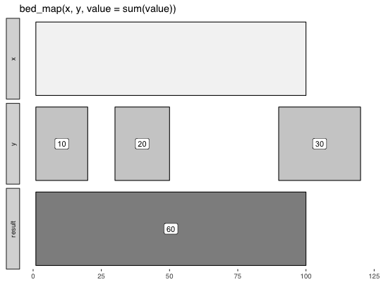

Multiple mapping functions can be specified.
bed_map(x, y, ..., invert = FALSE, strand = FALSE, strand_opp = FALSE, suffix = c(".x", ".y"), min_overlap = 1) concat(.data, sep = ",") values_unique(.data, sep = ",") values(.data, sep = ",") first(.data) last(.data)
min(),
count(), concat().data_frame
Book-ended intervals are not reported by default, but can be included
by setting min_overlap to 0.
x <- tibble::tribble( ~chrom, ~start, ~end, 'chr1', 1, 100 ) y <- tibble::tribble( ~chrom, ~start, ~end, ~value, 'chr1', 1, 20, 10, 'chr1', 30, 50, 20, 'chr1', 90, 120, 30 ) bed_glyph(bed_map(x, y, value = sum(value)), label = 'value')x <- tibble::tribble( ~chrom, ~start, ~end, "chr1", 100, 250, "chr2", 250, 500) y <- tibble::tribble( ~chrom, ~start, ~end, ~value, "chr1", 100, 250, 10, "chr1", 150, 250, 20, "chr2", 250, 500, 500) # also mean, median, sd etc bed_map(x, y, sum = sum(value))#> # A tibble: 2 × 4 #> chrom start end sum #> <chr> <dbl> <dbl> <dbl> #> 1 chr1 100 250 30 #> 2 chr2 250 500 500 #>bed_map(x, y, min = min(value), max = max(value))#> # A tibble: 2 × 5 #> chrom start end min max #> <chr> <dbl> <dbl> <dbl> <dbl> #> 1 chr1 100 250 10 20 #> 2 chr2 250 500 500 500 #>bed_map(x, y, concat(value))#> # A tibble: 2 × 4 #> chrom start end `concat(value)` #> <chr> <dbl> <dbl> <chr> #> 1 chr1 100 250 10,20 #> 2 chr2 250 500 500 #>bed_map(x, y, first(value))#> # A tibble: 2 × 4 #> chrom start end `first(value)` #> <chr> <dbl> <dbl> <dbl> #> 1 chr1 100 250 10 #> 2 chr2 250 500 500 #>bed_map(x, y, last(value))#> # A tibble: 2 × 4 #> chrom start end `last(value)` #> <chr> <dbl> <dbl> <dbl> #> 1 chr1 100 250 20 #> 2 chr2 250 500 500 #>bed_map(x, y, absmax = abs(max(value)))#> # A tibble: 2 × 4 #> chrom start end absmax #> <chr> <dbl> <dbl> <dbl> #> 1 chr1 100 250 20 #> 2 chr2 250 500 500 #>bed_map(x, y, absmin = abs(min(value)))#> # A tibble: 2 × 4 #> chrom start end absmin #> <chr> <dbl> <dbl> <dbl> #> 1 chr1 100 250 10 #> 2 chr2 250 500 500 #>bed_map(x, y, count = length(value))#> # A tibble: 2 × 4 #> chrom start end count #> <chr> <dbl> <dbl> <int> #> 1 chr1 100 250 2 #> 2 chr2 250 500 1 #>bed_map(x, y, count_distinct = length(unique(value)))#> # A tibble: 2 × 4 #> chrom start end count_distinct #> <chr> <dbl> <dbl> <int> #> 1 chr1 100 250 2 #> 2 chr2 250 500 1 #>bed_map(x, y, vals = values(value))#> # A tibble: 2 × 4 #> chrom start end vals #> <chr> <dbl> <dbl> <chr> #> 1 chr1 100 250 10,20 #> 2 chr2 250 500 500 #>bed_map(x, y, vals.unique = values_unique(value))#> # A tibble: 2 × 4 #> chrom start end vals.unique #> <chr> <dbl> <dbl> <chr> #> 1 chr1 100 250 10,20 #> 2 chr2 250 500 500 #>